WxMaxima — графический интерфейс пользователя для системы компьютерной алгебры (СКА) Maxima. WxMaxima позволяет использовать все функции Maxima. А также предоставляет ряд удобных мастеров для работы с наиболее часто используемыми функциями. Данное руководство описывает некоторые из тех функций, которые делают wxMaxima одним из наиболее популярных графических интерфейсов для Maxima.
В области открытого программного обеспечения большие системы обычно делятся на небольшие проекты, которые проще обслуживать небольшим группам разработчиков. Например, программа записи компакт-дисков будет состоять из средства командной строки, которое фактически выполняет запись CD, и графического интерфейса пользователя, позволяющего выполнять запись без необходимости изучения всех ключей командной строки, как и вообще без необходимости использования консоли. Одним из преимуществ такого подхода является возможность применить силы и средства, вложенные в разработку консольной программы, в работе сразу нескольких программ: одна и та же программа записи компакт-дисков может использоваться и в виде модуля файлового менеджера «Отправить на CD», и в качестве функции музыкального проигрывателя «Запись на CD», и в качестве программы записи CD в составе системы резервного копирования DVD. Другим преимуществом такого подхода является разделение одной большой задачи на меньшие части, позволяющее разработчикам создавать несколько интерфейсов для одной и той же программы.
Система компьютерной алгебры (СКА) в исполнении Maxima вполне вписывается в эту парадигму. СКА может выполнять роль логики калькулятора произвольной точности, либо осуществлять автоматические преобразования формул в составе более крупной системы (например, Sage). И при этом вполне может применяться и в качестве независимой системы. Работать с Maxima можно в командной строке. Однако часто интерфейс в стиле wxMaxima обеспечивает более эффективную работу с ПО, особенно новичкам.
Maxima является полноценной системой компьютерной алгебры (СКА). СКА представляет собой программу, которая решает математические задачи путём преобразования формул для нахождения формулы, способной решить заданную задачу, в противоположность простому выводу численного значения результата. Иными словами, Maxima может служить в качестве калькулятора, выводящего численные представления переменных, и вместе с тем может выдавать и аналитические решения. Более того, она предлагает ряд численных методов анализа для уравнений или систем уравнений, которые не могут быть решены аналитически.
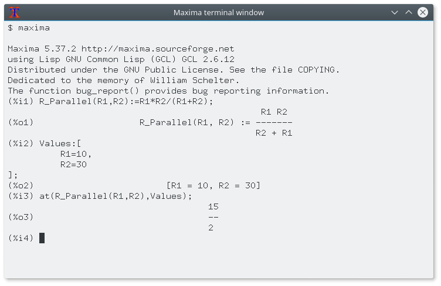
Исчерпывающая документация Maxima доступна в сети Интернет. Часть этой документации также доступна в меню справки wxMaxima. При нажатии клавиши «Справка» (в большинстве систем эту функцию выполняет клавиша F1) контекстно-зависимая функция справки wxMaxima автоматически переходит на страницу руководства Maxima с описанием команды, заданной в поле ввода.
WxMaxima — это графический интерфейс пользователя, полностью сохраняющий функциональность и гибкость Maxima. WxMaxima предлагает пользователям графическое отображение наряду с множеством функциональных возможностей, позволяющих сделать работу с Maxima более простой и приятной. Например, wxMaxima может экспортировать содержимое любого поля (а при необходимости и любой части формулы) в виде текста в формате LaTeX или MathML по щелчку правой клавиши мыши. Это позволяет экспортировать целую книгу либо в виде HTML-файла, либо в виде файла LaTeX. Документация wxMaxima, включая рабочие книги для иллюстрации аспектов использования программы, доступна онлайн на сайте справки wxMaxima, а также в меню справки программы.
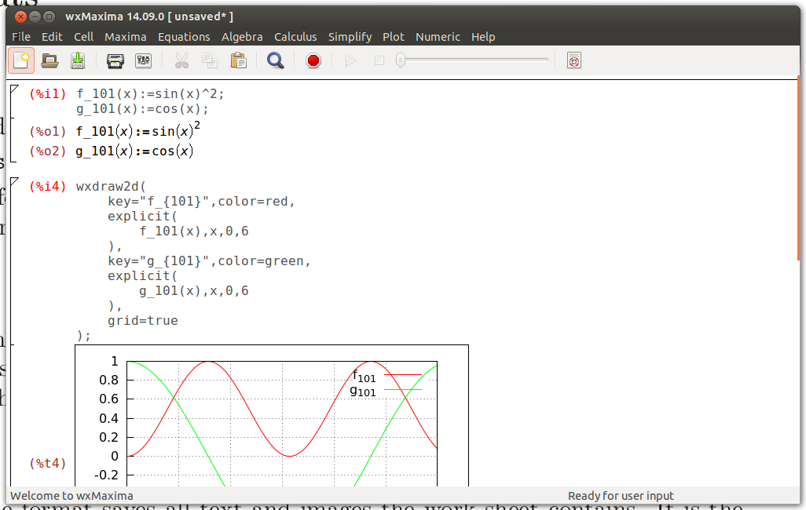
Введённые в wxMaxima вычисления выполняются в фоновом режиме консольной программой Maxima.
Большая часть интерфейса wxMaxima интуитивно понятна, но некоторые детали требуют особенного внимания. Этот сайт содержит несколько рабочих книг, помогающих разобраться в различных аспектах работы с wxMaxima. Проработка некоторых из них (особенно «(wx)Maxima за 10 минут») позволит лучше ознакомиться как с содержимым Maxima, так и с использованием wxMaxima во взаимодействии с Maxima. Это руководство концентрируется на описании таких аспектов wxMaxima, которые не будут интуитивно понятны, и описание которых может отсутствовать в материалах, доступных онлайн.
Одним из незначительного числа нестандартных подходов, нашедших применение в wxMaxima, является организация данных для работы с Maxima по полям, которые вычисляются (имеется в виду «отправляются в Maxima») только по требованию пользователя. При вычислении поля все команды в этом поле, и только в этом поле, вычисляются путём пакетной обработки. (Предыдущее высказывание не совсем точно: можно выбрать несколько смежных полей для совместного вычисления. Также Maxima может вычислять сразу все поля в рабочей книге за один проход.) Принятый в wxMaxima подход к отправке команд для вычисления на первый взгляд может показаться необычным. Однако он значительно упрощает работу с большими документами (где пользователю не нужно, чтобы каждое изменение автоматически запускало полный пересчёт целого документа). А также данный подход очень удобен для отладки.
При вводе текста wxMaxima автоматически создаёт новое поле рабочего листа. Тип этого поля можно выбрать на панели инструментов. Если создано поле кода, то его можно отправить в Maxima, после чего под этим кодом выводится результат вычисления. Пара таких команд показана ниже.
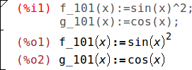
При вычислении содержимого, введённого в поле ввода, Maxima
назначает вводу метку (по умолчанию отображается красным и распознаётся
по %i), позволяющую позднее сослаться на него в сеансе
wxMaxima. Сгенерированный в Maxima вывод также
получает метку, начинающуюся с %o и по умолчанию скрытую,
если только пользователь не назначит выводу имя. Тогда по умолчанию
будет показана заданная пользователем метка. Но и автоматически
создаваемая в Maxima метка в виде %o также будет
доступна.
Помимо полей ввода, wxMaxima позволяет создавать текстовые поля для документации, поля изображений, поля заголовков, поля глав и поля разделов. Каждое поле имеет свой собственный буфер отмены действий, поэтому можно легко выполнять отладку, изменяя значения нескольких полей и затем постепенно отменяя ненужные изменения. Более того, сам рабочий лист имеет глобальный буфер отмены действий, позволяющий отменять изменение, добавление и удаление полей.
На рисунке ниже показаны различные типы полей (поля заголовков, поля разделов, поля подразделов, текстовые поля, поля ввода/вывода и поля изображений).
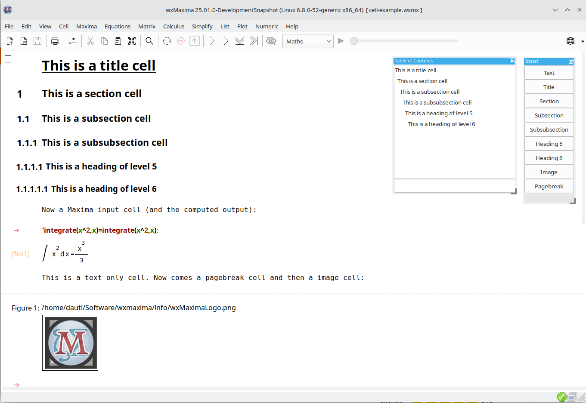
Рабочий лист состоит из полей. WxMaxima оперирует следующими их типами:
По умолчанию при вводе текста в wxMaxima автоматически создаётся математическое поле. Поля других типов можно создавать через меню «Поле», с помощью указанных там сочетаний клавиш или раскрывающегося списка на панели инструментов. При создании не-математического поля любой текст, введённый в файл, интерпретируется как текст.
Текст
комментария (в стиле языка C) может использоваться в математических
полях следующим образом:
/* Этот комментарий будет игнорироваться Maxima */
«/*» указывает начало комментария, «*/»
указывает его конец.
Если пользователь пытается выделить предложение полностью, текстовый процессор будет автоматически пытаться расширить выделение, чтобы оно начиналось и завершалось на границе слова. Подобным образом при выборе более одного поля wxMaxima расширяет выделение до целых полей.
Необычной возможностью wxMaxima является гибкость при перетаскивании, реализованная благодаря определению двух типов курсоров. При необходимости wxMaxima переключается между ними автоматически:
После загрузки wxMaxima отображается только мигающий горизонтальный
курсор. Если начать ввод, автоматически создаётся математическое поле и
курсор принимает обычную вертикальную форму. Появится стрелка вправо —
«запрос на ввод». После вычисления математического поля
(CTRL+ENTER) будут показаны метки, например:
(%i1), (%o1).
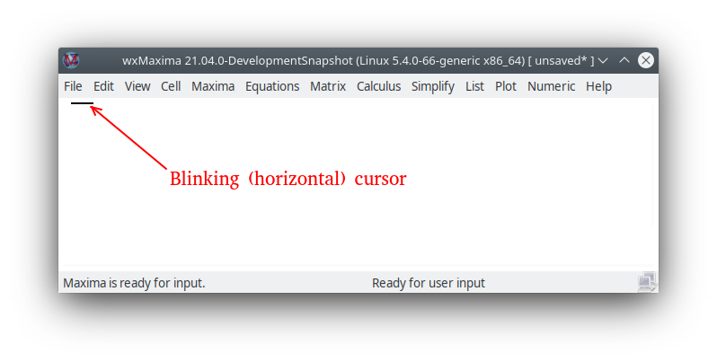
Может понадобиться создать поле другого типа (с помощью меню «Поле»), например, поле заголовка или текстовое поле с описанием того, что будет сделано, при начале создания рабочего листа.
При переходе по различным полям также отображается (мигающий) горизонтальный курсор в местах, где в рабочий лист можно вставить поле (математическое поле — простым вводом формулы, поле другого типа — с помощью меню).
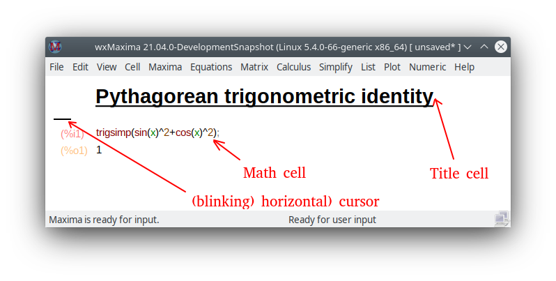
Команда в поле кода исполняется однократно по нажатию сочетания клавиш CTRL+ENTER, SHIFT+ENTER или клавиши ENTER на клавиатуре. По умолчанию wxMaxima вводит команды при нажатии CTRL+ENTER или SHIFT+ENTER, но после соответствующей настройки wxMaxima будет выполнять команды по нажатию ENTER.
WxMaxima содержит функцию автодополнения, которая включается через меню («Поле/Завершить слово») или по нажатию сочетания клавиш CTRL+ПРОБЕЛ. Автодополнение зависит от контекста. Например, при активации внутри спецификации модулей для ezUnits будет предлагаться список применимых модулей.
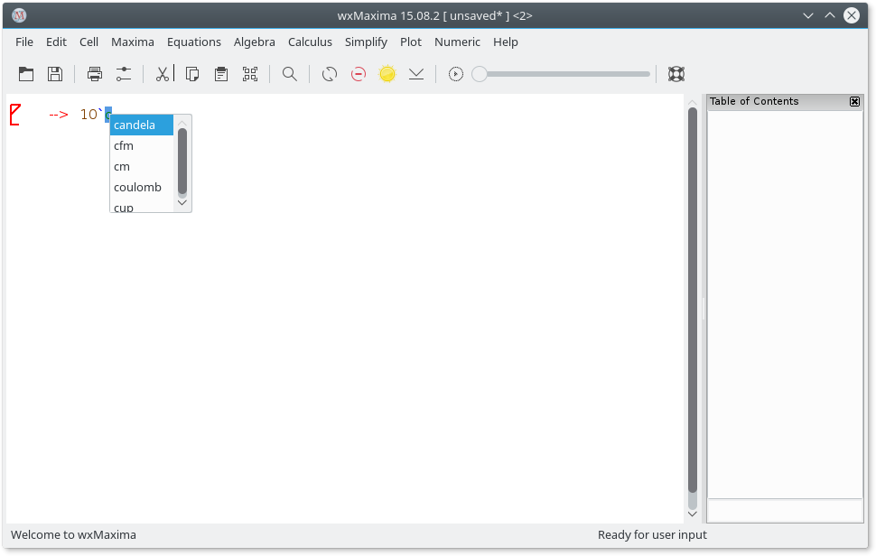
Помимо дополнения имени файла, имени модуля, текущей команды или имени переменной, автодополнение может отображать шаблон большинства команд с указанием типа (и значения) ожидаемых программой параметров. Для включения этой функции нажмите SHIFT+CTRL+ПРОБЕЛ или выберите соответствующий пункт меню («Поле/Показать шаблон»).
Компьютеры традиционно хранят символы в 8-разрядных значениях. Это позволяет создать набор из 256 различных символов. В такой набор можно включить все буквы, цифры и управляющие символы (конец передачи, конец строки, линии и углы для рисования прямоугольников меню и т.д..) практически любого языка.
Для большинства стран в кодовую страницу из выбранных 256 символов не входят греческие буквы, хотя они часто используются в математике. Для преодоления данного ограничения был разработан Юникод: кодировка, позволяющая использовать латиницу как обычно, но при этом содержащая намного больше 256 символов.
Maxima позволяет использовать Юникод, если её сборка выполнялась компилятором Lisp, который либо поддерживает Юникод, либо не принимает во внимание кодировку шрифта. Поскольку из пары представленных условий по крайней мере одно может оказаться справедливым, wxMaxima поддерживает ввод греческих символов с помощью клавиатуры:
| кл. | греч. буква | кл. | греч. буква | кл. | греч. буква |
|---|---|---|---|---|---|
| a | альфа | i | йота | r | ро |
| b | бета | k | каппа | s | сигма |
| g | гамма | l | лямбда | t | тау |
| d | дельта | m | мю | u | ипсилон |
| e | эпсилон | n | ню | f | фи |
| z | дзета | x | кси | c | хи |
| h | эта | om | омикрон | y | пси |
| q | тэта | p | пи | o | омега |
| A | Альфа | I | Йота | R | Ро |
| B | Бета | K | Каппа | S | Сигма |
| G | Гамма | L | Лямбда | T | Тау |
| D | Дельта | M | Мю | U | Ипсилон |
| E | Эпсилон | N | Ню | P | Фи |
| Z | Дзета | X | Кси | C | Хи |
| H | Эта | Om | Омикрон | Y | Пси |
| T | Тэта | P | Пи | O | Омега |
Для ввода греческих букв также можно воспользоваться боковой панелью «Греческие буквы».
Несколько букв латиницы схожи с греческими буквами. Например, латинская «A» и греческая буква «Альфа». Однако, несмотря на кажущееся сходство, это два разных символа, представленных разными кодовыми точками (числами) в Юникоде.
Могут возникнуть проблемы, если задать значение переменной A, но впоследствии пытаться использовать греческую букву Альфа для выполнения каких-либо операций с этой переменной, особенно при печати. Для греческой буквы Мю (которая может использоваться и в качестве приставки микро-) также есть две разных кодовых точки Юникода.
Поэтому на боковой панели «Греческие буквы» имеется параметр, позволяющий сделать схожие буквы недоступными (изменяется в контекстном меню).
Тот же механизм позволяет вводить различные математические символы:
| клавиши для ввода | математический символ |
|---|---|
| hbar | постоянная Планка: h с горизонтальной линией сверху |
| Hbar | H с горизонтальной линией сверху |
| 2 | квадрат |
| 3 | куб |
| /2 | 1/2 |
| partial | знак частной производной (d в dx/dt) |
| integral | знак интеграла |
| sq | квадратный корень |
| ii | мнимая единица |
| ee | элемент |
| in | включается |
| impl implies | импликация |
| inf | бесконечность |
| empty | пустое множество |
| TB | большой треугольник направо |
| tb | малый треугольник направо |
| and | и |
| or | или |
| xor | исключающее или |
| nand | не-и |
| nor | не-или |
| equiv | эквивалентно |
| not | не |
| union | объединение |
| inter | пересечение |
| subseteq | подмножество или равно |
| subset | подмножество |
| notsubseteq | не подмножество или равно |
| notsubset | не подмножество |
| approx | приблизительно |
| propto | пропорционально |
| neq != /= or # | не равно |
| +/- or pm | знак плюс/минус |
| <= or leq | меньше или равно |
| >= or geq | больше или равно |
| << or ll | намного меньше |
| >> or gg | намного меньше |
| qed | конец доказательства |
| nabla | оператор Лапласа |
| sum | знак суммы |
| prod | знак умножения |
| exists | квантор существования |
| nexists | квантор несуществования |
| parallel | знак параллельности |
| perp | знак перпендикулярности |
| leadsto | знак «отсюда следует» |
| -> | стрелка направо |
| –> | длинная стрелка направо |
Для ввода математических символов также можно использовать боковую панель «Математические символы».
Если специальный символ отсутствует в списке, то произвольный символ Юникода можно ввести нажатием ESC [код символа (шестнадцатеричный)] ESC. Кроме того, с помощью контекстного меню боковой панели «Математические символы» можно отобразить список всех доступных символов Юникода, которые можно добавить на эту панель или в рабочий лист.
Таким образом комбинация ESC61ESC позволяет ввести символ «a».
Обратите внимание, что большая часть этих символов (заметным исключением являются логические символы) не имеют специального значения в Maxima и поэтому будут интерпретироваться как обычные символы. Если Maxima собрана в компиляторе Lisp, не имеющем поддержки символов Юникода, то при их использовании может быть выведено сообщение об ошибке.
Также бывает, что греческие или математические символы отсутствуют в выбранном шрифте, из-за чего их отображение невозможно. Для решения этой проблемы необходимо выбрать другие шрифты (с помощью меню «Правка -> Настройка -> Стиль»).
wxMaxima заменяет некоторые символы Юникода на соответствующие
выражения Maxima, например, ² на ^2,
³ на ^3, знак квадратного корня на функцию
sqrt(), (математический) знак Сигма (отличающийся от
символа Юникода для соответствующей греческой буквы) на
sum() и так далее.
В Юникоде есть несколько «правильных» дробей, представленных в виде
одной кодовой точки Юникода:
¼, ½, ¾, ⅐, ⅑, ⅒, ⅓, ⅔, ⅕, ⅖, ⅗, ⅘, ⅙, ⅚, ⅛, ⅜, ⅝, ⅞
wxMaxima заменит их соответствующими представлениями Maxima
(например, (1/4)) перед отправкой ввода в Maxima. Кроме
того, ⅟ заменяется на 1/, а ↉
(используется в бейсболе) — на (0/3).
В полях ввода рекомендуется использовать код Maxima
(а не эти кодовые точки Юникода) (обоснование: (a) их может не быть в
используемом для ввода математических данных шрифте; (b) если сохранить
документ как файл wxm, он будет доступен для чтения
(командной строкой) Maxima, но эти изменения не будут работать в
командной строке Maxima); но они могут появиться при вырезании и вставке
формулы из другого документа.
Наиболее важные команды Maxima, а также содержание, окна с отладочными сообщениями и журнал последних отданных команд доступны на соответствующих боковых панелях. Их можно активировать с помощью меню «Вид» и переместить в любое место внутри или за пределами окна wxMaxima. Также можно открыть панель, позволяющую вводить греческие буквы с помощью мыши.
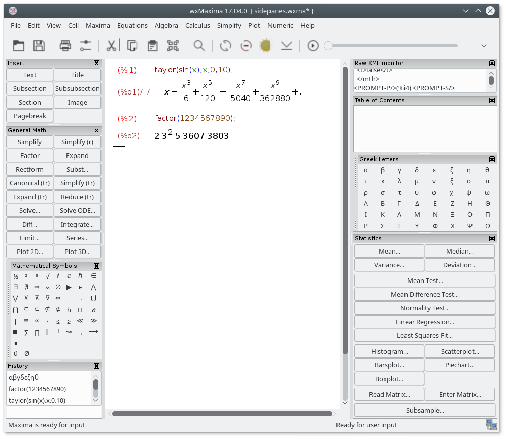
Боковая панель «Содержание» позволяет повышать или понижать уровень заголовка путём щелчка по нему правой клавишей мыши с последующим выбором ближайшего более высокого или низкого уровня.
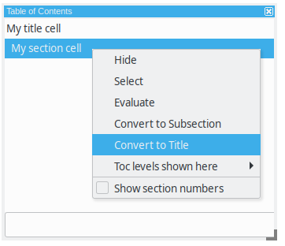
Несколько текстовых процессоров и подобных им программ либо способны распознать ввод MathML и автоматически вставить его в виде редактируемого двухмерного уравнения, либо (как LibreOffice) имеют редактор уравнений, позволяющий «импортировать MathML из буфера обмена». Другие поддерживают RTF maths. Поэтому в контекстном меню wxMaxima доступно несколько пунктов.
WxMaxima поддерживает стандартные элементы форматирования Markdown, которые не конфликтуют с математической записью. Одним из таких элементов являются маркированные списки.
Обычный текст
* Один элемент, уровень отступа 1
* Другой элемент с уровнем отступа 1
* Элемент на втором уровне отступа
* Второй элемент на втором уровне отступа
* Третий элемент на первом уровне отступа
Обычный текстWxMaxima считает цитатой текст, начинающийся символом
>:
Обычный текст > цитата цитата цитата цитата > цитата цитата цитата цитата > цитата цитата цитата цитата Обычный текст
Вывод wxMaxima в формате TeX и HTML также распознаёт
=> и заменяет его на соответствующий символ Юникода:
cogito => sum.
Другие символы, которые распознаются при экспорте в HTML и TeX:
<= и >= для сравнений, двойная
двухсторонняя стрелка (<=>), односторонние стрелки
(<->, -> и <-) и
+/- в качестве соответствующего знака. Для вывода TeX также
распознаются << и >>.
Большинство сочетаний клавиш можно найти в тексте соответствующих меню. Поскольку они фактически берутся из текста меню и могут быть локализованы при переводе wxMaxima для использования клавиатур с соответствующими локальными настройками, мы не будем приводить их здесь. Хотя несколько сочетаний клавиш с их псевдонимами в меню отсутствуют:
Если текстовое поле начинается с TeX: экспорт в TeX
будет содержать дословный текст, который который следует за меткой
TeX:. Эта функция позволяет вводить разметку TeX
непосредственно в рабочую книгу wxMaxima.
Разрабатываемые в сеансе wxMaxima материалы можно сохранять для дальнейшего использования одним из трёх способов:
Файлы .mac представляют собой обычные текстовые файлы,
содержащие команды Maxima. Их можно считывать с помощью команд
Maxima batch() или load(), либо с
помощью пункта меню wxMaxima «Файл/Пакетный файл».
Ниже приводится один пример. Quadratic.mac определяет
функцию, после чего генерирует график с помощью wxdraw2d().
Впоследствии выводится содержимое файла Quadratic.mac и
вычисляется вновь определённая функция f().
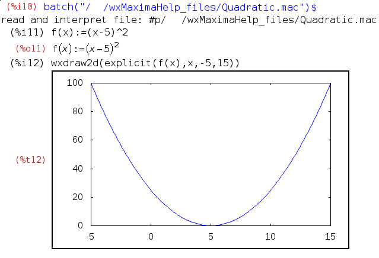
Внимание: несмотря на то, что файл Quadratic.mac имеет
обычное расширение Maxima (.mac), прочитать его
сможет только wxMaxima, поскольку команда
wxdraw2d() является расширением wxMaxima для
Maxima. (Командная строка) Maxima проигнорирует неизвестную
команду wxdraw2d(), просто продублировав её имя в
выводе.
Файлы .mac можно использовать для создания собственной
библиотеки макросов. Но, поскольку они не содержат достаточно информации
по структуре, они не могут быть считаны как сеанс wxMaxima.
.wxm files contain the worksheet except for
Maxima’s output. On Maxima versions >5.38 they can be read
using Maxima’s load() function just as .mac files.
Well - mostly. Questions (like asksign(x)) are problematic,
as the answer is written in the .wxm file (so that it can
be suggested after loading), but that can Maxima not evaluate. You can
prevent Maxima from asking questions by using assume() to
declare some properties, Maxima wants to know.
With this plain-text format, it sometimes is unavoidable that worksheets that use new features are not downwards-compatible with older versions of wxMaxima.
Это файл с обычным текстом (открывается в текстовом редакторе), в котором содержимое полей хранится в виде специальных комментариев Maxima.
Файл начинается со следующего комментария:
/* [wxMaxima batch file version 1] [ DO NOT EDIT BY HAND! ]*/ /* [ Created with wxMaxima version 24.02.2_DevelopmentSnapshot ] */
Затем следуют поля, записанные в виде комментариев Maxima. Например, поле раздела:
/* [wxMaxima: section start ]
Заголовок раздела
[wxMaxima: section end ] */или (разумеется, в математическом поле ввод будет не
закомментирован (вывод не сохраняется в файле wxm)):
/* [wxMaxima: input start ] */
f(x):=x^2+1$
f(2);
/* [wxMaxima: input end ] */Изображения закодированы в Base64. В первой строке находится тип изображения:
/* [wxMaxima: image start ]
jpg
[кажущаяся беспорядочной последовательность символов]
[wxMaxima: image end ] */Разрыв страницы представляет собой одну строку следующего содержания:
/* [wxMaxima: page break ] */Свёрнутые поля обозначаются так:
/* [wxMaxima: fold start ] */
...
/* [wxMaxima: fold end ] */Этот файл на основе формата XML сохраняет рабочий лист целиком, включая такие параметры, как масштаб отображения и список отслеживания. Это рекомендуемый формат.
Файл wxmx похож на двоичный формат, но работать с ним
можно с помощью базовых инструментов ОС. Это файл zip, который можно
разархивировать с помощью программы unzip (рекомендуется
переименовать файл, чтобы программа unzip могла распознать
его в ОС). При создании файла используется не функция сжатия, а
возможность объединять несколько файлов в один — изображения уже сжаты,
а всё остальное представлено простым текстом (занимает куда меньший
объём, чем громадные включаемые изображения).
Содержит следующие файлы:
mimetype: этот файл содержит тип MIME файлов wxMaxima:
text/x-wxmathml.format.txt: краткое описание wxMaxima и формата файлов
wxmx.content.xml: документ XML, содержащий различные поля
документа в формате XML.Таким образом, в случае появления ошибок можно разархивировать
документ wxMaxima (рекомендуется сначала переименовать его в файл
zip), внести изменения в файл content.xml в
текстовом редакторе или заменить повреждённое изображение, снова
добавить файлы в архив и заменить расширение zip на
wxmx — и получаем отредактированный файл
wxmx.
Для некоторых общих переменных конфигурации wxMaxima обеспечивает два вида настройки:
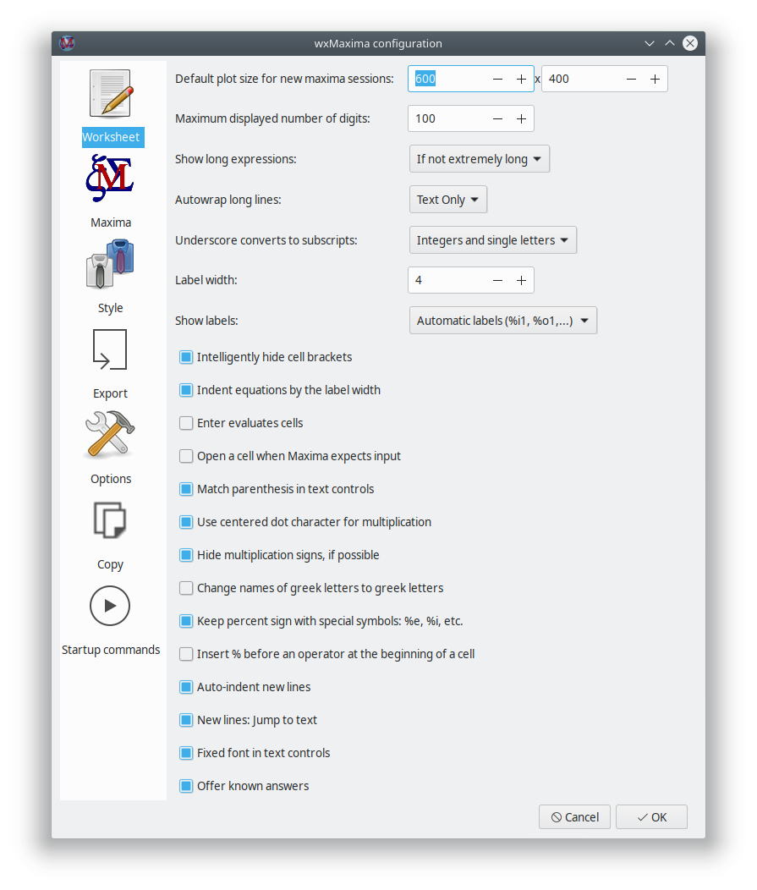
Значение частоты кадров анимации, использующееся при создании новых
анимаций, хранится в переменной wxanimate_framerate.
Начальное значение этой переменной, которое будет содержаться в новом
рабочем листе, можно изменить в диалоговом окне настройки параметров
конфигурации.
Начиная со следующего запуска, указанный размер будет использоваться
для создания графиков, встраиваемых в рабочий лист, если значение
параметра wxplot_size не изменялось Maxima.
Чтобы задать размер одного графика, используйте следующую запись при установке значения переменной для одной команды:
wxdraw2d(
explicit(
x^2,
x,-5,5
)
), wxplot_size=[480,480]$Этот параметр активирует сразу две функции:
При включении этого параметра файл с рабочим листом перезаписывается только по требованию пользователя. В случае сбоя/отключении питания/… свежая резервная копия остаётся доступной во временном каталоге.
Если этот параметр не включён, работа wxMaxima больше напоминает современное приложение сотового телефона:
При использовании Unix/Linux параметры конфигурации сохраняются в
домашнем каталоге в файле .wxMaxima (если используется
wxWidgets < 3.1.1) или в .config/wxMaxima.conf
(XDG-Standard) (если используется wxWidgets >= 3.1.1). Версию
wxWidgets можно посмотреть с помощью команды
wxbuild_info(); или в меню «Справка -> О программе». wxWidgets — кросс-платформенная
библиотека для построения графического интерфейса пользователя, на
которой основан интерфейс wxMaxima (отсюда wx в
имени). (Поскольку имя файла начинается с точки, .wxMaxima
или .config будут скрытыми файлами.)
При использовании Windows параметры конфигурации будут храниться в
реестре. Расположение записей wxMaxima в реестре:
HKEY_CURRENT_USER\Software\wxMaxima
WxMaxima является прежде всего графическим интерфейсом пользователя для Maxima. В этом качестве её главной целью является передача команд Maxima и получение результатов выполнения этих команд. Однако в некоторых случаях wxMaxima позволяет дополнить функциональные возможности Maxima. Уже упоминалась способность wxMaxima генерировать отчёты путём экспорта содержимого рабочей книги в файлы HTML и LaTeX. Этот раздел описывает способы, которые wxMaxima использует для усовершенствования использования графики в сеансе.
Параметр wxsubscripts указывает, будет ли (и как)
wxMaxima автоматически переводить в нижний индекс имена
переменных:
При значении false эта функциональная возможность
отключена; wxMaxima не будет автоматически переводить в нижний индекс
часть имён переменных после символа подчёркивания.
При значении 'all весь текст после символа подчёркивания
будет переводиться в нижний индекс.
При значении true имена переменных в формате
x_y отображаются как нижний индекс, если:
x или y представлены одной
буквой,y представлена целым числом (может включать более
одного символа).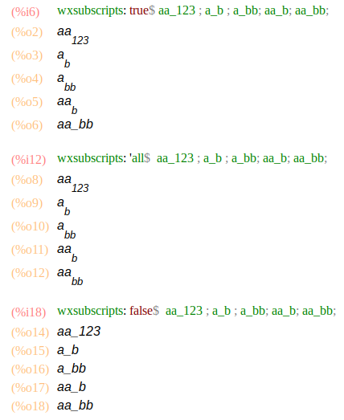
Если имя переменной не соответствует этим требованиям, её всё равно
можно объявить в качестве «подлежащей переводу в нижний индекс» с
помощью команды wxdeclare_subscript(variable_name); или
wxdeclare_subscript([variable_name1,variable_name2,...]);
Объявление переменной в качестве переведённой в нижний индекс можно
отменить с помощью команды:
wxdeclare_subscript(variable_name,false);
Для установки этих значений можно воспользоваться меню «Вид -> Автоперевод в нижний индекс».
Работающие на протяжении длительного времени команды могут выводить
информацию в строку состояния. Новая информация последовательно заменяет
размещённую там старую (что позволяет использовать строку состояния в
качестве индикатора хода выполнения) и удаляется сразу по завершении
выполнения текущей отправленной в Maxima команды. Можно
использовать wxstatusbar() даже в тех библиотеках, которые
могут работать с обычной Maxima (а не wxMaxima): при
отсутствии wxMaxima команда wxstatusbar() просто
не будет обрабатываться.
for i:1 thru 10 do (
/* Информирование о ходе выполнения */
wxstatusbar(concat("Pass ",i)),
/* (sleep n) — функция Lisp, которую можно вызывать */
/* путём предварения символом "?". Она откладывает */
/* выполнение программы (здесь: на 3 секунды) */
?sleep(3)
)$Построение графиков (в основном в связи с графической системой) предполагает, что графический интерфейс пользователя предоставит ряд расширений для исходной программы.
Обычно Maxima использует внешнюю программу Gnuplot, которая открывает отдельное окно для каждого создаваемого графика. Поскольку часто удобнее не делать так, а встраивать графики в рабочий лист, wxMaxima предоставляет собственный набор графических функций, которые отличаются от соответствующих функций Maxima только именем: все они имеют префикс “wx”.
Следующие графические функции имеют wx-аналоги:
| Графическая функция wxMaxima | Графическая функция Maxima |
|---|---|
wxplot2d() |
plot2d |
wxplot3d() |
plot3d |
wxdraw2d() |
draw2d |
wxdraw3d() |
draw2d |
wxdraw() |
draw |
wximplicit_plot() |
implicit_plot |
wxhistogram() |
histogram |
wxscatterplot() |
scatterplot |
wxbarsplot() |
barsplot |
wxpiechart() |
piechart |
wxboxplot() |
boxplot |
Если Maxima прочитает файл wxm (в консоли), то эти
функции игнорируются (печатаются в выводе, как и другие неизвестные
функции в Maxima).
При появлении проблем с работой одной из этих функций рекомендуется
проверить, существуют ли эти проблемы также и для функции Maxima
(например, если wxplot2d() возвращает ошибку, проверьте тот
же график с помощью команды Maxima plot2d() (она открывает
график в отдельном окне)). Если проблемы остались, вероятнее всего, что
дело в ошибке Maxima; следует сообщить о ней с помощью системы отслеживания
ошибок Maxima. Либо это может быть ошибкой Gnuplot.
Как указано выше, диалоговое окно настройки конфигурации позволяет
изменять размер по умолчанию для создаваемых графиков, устанавливая
начальное значение параметра wxplot_size. Графические
процедуры wxMaxima используют эту переменную для получения
размера графика в пикселах. Её значение всегда можно запросить или
использовать для установки размера последующих графиков:
wxplot_size:[1200,800]$
wxdraw2d(
explicit(
sin(x),
x,1,10
)
)$Если изменить размер необходимо только у одного графика,
Maxima обеспечивает канонический путь изменения атрибута только
для текущего поля. В этом случае строка установки параметра
wxplot_size = [value1, value2] добавляется к команде
wxdraw2d( ) и не является частью команды
wxdraw2d.
wxdraw2d(
explicit(
sin(x),
x,1,10
)
),wxplot_size=[1600,800]$Установка размера встроенного графика с помощью параметра
wxplot_size работает для встроенного графика при
использовании команд wxplot, wxdraw,
wxcontour_plot и wximplicit_plot, а также для
встроенных анимаций при использовании команд
with_slider_draw и wxanimate.
По всей видимости в Gnuplot не реализован универсальный
способ определения наличия поддержки вывода растрового изображения в
улучшенном качестве, реализуемого библиотекой Cairo. В системах, где
Gnuplot скомпилирован с поддержкой этой библиотеки, параметр
pngCairo в меню настройки конфигурации (может быть переопределён
переменной wxplot_pngcairo) включает поддержку сглаживания
и дополнительные стили линий. Если включить параметр
wxplot_pngCairo в системах без поддержки этой библиотеки в
Gnuplot, то вместо графического изображения будут получены
сообщения об ошибке.
Если график был создан с помощью команд типа wxdraw
(wxplot2d и wxplot3d в этой функции не
поддерживаются) и размер файла основного проекта Gnuplot не
слишком велик, то можно использовать контекстное меню wxMaxima,
которое позволяет открыть график в интерактивном окне
Gnuplot.
plotВ MS Windows существует две программы Gnuplot:
gnuplot.exe и wgnuplot.exe. Выбрать ту из них,
которая будет использоваться, можно в меню настройки конфигурации. При
этом wgnuplot.exe позволяет открыть окно командной строки
для ввода команд gnuplot, а gnuplot.exe такой
возможности не предоставляет. К сожалению, wgnuplot.exe
позволяет Gnuplot на некоторое время «захватывать» фокус
клавиатуры каждый раз при подготовке графика.
Трёхмерные графики затрудняют чтение количественных данных. В
качестве возможной альтернативы можно назначить третий параметр колесу
мыши. Команда with_slider_draw является версией команды
wxdraw2d, позволяющей подготовить несколько графиков и
переключаться между ними путём перемещения ползунка в верхней части
экрана. WxMaxima позволяет экспортировать эту анимацию в виде
анимированного файла gif.
Первые два аргумента команды with_slider_draw
представляют собой имя переменной, значение которой пошагово изменяется
в графиках, и список значений этой переменной. За ними следуют обычные
аргументы для wxdraw2d:
with_slider_draw(
f,[1,2,3,4,5,6,7,10],
title=concat("f=",f,"Hz"),
explicit(
sin(2*%pi*f*x),
x,0,1
),grid=true
);Аналогичный функционал для трёхмерных графиков доступен при
использовании команды with_slider_draw3d, которая позволяет
вращать трёхмерные графики:
wxanimate_autoplay:true;
wxanimate_framerate:20;
with_slider_draw3d(
α,makelist(i,i,1,360,3),
title=sconcat("α=",α),
surface_hide=true,
contour=both,
view=[60,α],
explicit(
sin(x)*sin(y),
x,-π,π,
y,-π,π
)
)$Если ключевым моментом является общая форма графика, то небольшого смещения графика может быть достаточно, чтобы сделать его трёхмерную природу интуитивно узнаваемой:
wxanimate_autoplay:true;
wxanimate_framerate:20;
with_slider_draw3d(
t,makelist(i,i,0,2*π,.05*π),
title=sconcat("α=",α),
surface_hide=true,
contour=both,
view=[60,30+5*sin(t)],
explicit(
sin(x)*y^2,
x,-2*π,2*π,
y,-2*π,2*π
)
)$Для тех, кто лучше знаком с plot, чем с
draw, имеется другой набор функций:
with_slider иwxanimate.Обычно анимации воспроизводятся или экспортируются с частотой кадров,
заданной в конфигурации wxMaxima. Для установки скорости
воспроизведения отдельной анимации можно воспользоваться параметром
wxanimate_framerate:
wxanimate(a, 10,
sin(a*x), [x,-5,5]), wxanimate_framerate=6$Функции анимации используют команду Maxima
makelist и подвержены тем же недостаткам, в связи с
которыми значение переменной ползунка подставляется в выражение только
тогда, когда эта переменная непосредственно видима в выражении. Поэтому
приведённый далее пример вызовет появление ошибки:
f:sin(a*x);
with_slider_draw(
a,makelist(i/2,i,1,10),
title=concat("a=",float(a)),
grid=true,
explicit(f,x,0,10)
)$Если же отправить Maxima явный запрос на подстановку значения ползунка, построение графиков работает прекрасно:
f:sin(a*x);
with_slider_draw(
b,makelist(i/2,i,1,10),
title=concat("a=",float(b)),
grid=true,
explicit(
subst(a=b,f),
x,0,10
)
)$Эта функция Maxima (в системах, которые её поддерживают) не реализована в wxMaxima, но иногда может быть очень удобной. Следующий пример взят из письма, которое Mario Rodriguez отправил в рассылку Maxima:
```maxima load(draw);
/* Парабола в окне #1 */ draw2d(terminal=[wxt,1],explicit(x^2,x,-1,1));
/* Парабола в окне #2 */ draw2d(terminal=[wxt,2],explicit(x^2,x,-1,1));
/* Параболоид в окне #3 */ draw3d(terminal=[wxt,3],explicit(x2+y2,x,-1,1,y,-1,1)); ```
Также возможно создание нескольких графиков в одном окне (то же самое
возможно в командной строке Maxima при использовании стандартной команды
draw()):
wxdraw(
gr2d(
key="sin (x)",grid=[2,2],
explicit(sin(x),x,0,2*%pi)),
gr2d(
key="cos (x)",grid=[2,2],
explicit(cos(x),x,0,2*%pi))
);Боковая панель «График с помощью Draw» работает как простой генератор кода, который позволяет создавать сцены, использующие гибкие возможности пакета draw, поставляемого с Maxima.
Генерирует основную конструкцию команды draw(), которая
рисует двухмерную сцену. Эту сцену далее необходимо заполнить командами,
формирующими её наполнение, например, с помощью кнопок в строках под
кнопкой «2D».
Одной из полезных функций кнопки «2D» является возможность задать сцену в виде анимации, где переменная (по умолчанию используется t) имеет разное значение в каждом кадре: часто бывает проще понять анимированный двухмерный график, чем те же самые данные в неподвижной трёхмерной сцене.
Генерирует основную конструкцию команды draw(), которая
рисует трёхмерную сцену. Если ни двухмерная, ни трёхмерная сцена не
заданы, при нажатии всех остальных кнопок создаётся двухмерная сцена,
содержащая генерируемую кнопкой команду.
Добавляет стандартный график выражения, подобного
sin(x), x*sin(x) или x^2+2*x-4, в
команду draw(), в которой в данный момент находится курсор.
Если команда draw отсутствует, то будет создана двухмерная сцена. Каждая
сцена может быть заполнена любым количеством графиков.
Пытается найти все точки, для которых истинны выражения, подобные
y=sin(x), y*sin(x)=3 или
x^2+y^2=4, и помещает итоговую кривую в команду
draw(), в которой в данный момент находится курсор. Если
команда draw отсутствует, то будет создана двухмерная сцена.
Проводит переменную по шагам от нижнего до верхнего предела с
использованием двух выражений, подобных t*sin(t) и
t*cos(t), для генерации координат x, y (а в трёхмерных
графиках ещё и z) для кривой, заданной в текущей команде draw.
Рисует несколько точек, которые при необходимости можно соединить. Координаты точек берутся из списка списков, двухмерного массива, либо из одного списка или массива для каждой оси.
Рисует заголовок в верхней части диаграммы.
Задаёт ось.
(Только для трёхмерных графиков): добавляет отображение контурных
линий, подобных изображаемым на картах гор, в команды создания графиков,
которые следуют за текущей командой draw(), и/или на нижнюю
плоскость графика. Данный мастер также позволяет полностью исключить
начертание кривых, оставляя на графике только контуры.
Добавляет запись с отображением имени следующего графика к легенде диаграммы. Пустое имя отключает формирование записей легенды для последующих графиков.
Задаёт цвет линии для последующих графиков, содержащихся в составе текущей команды draw.
Задаёт цвет заливки для последующих графиков, передаваемых в составе команды draw.
Выводит мастер, позволяющий задать линии сетки.
Позволяет выбрать приемлемое значение компромисса между скоростью и точностью, являющегося неотъемлемой частью любой программы формирования графиков.
Размер шрифта по умолчанию может оказаться слишком маленьким,
особенно при использовании мониторов с высоким разрешением. Для команд
на основе draw установка шрифта / размера шрифта
выполняется с помощью таких параметров, как font=...,
font_size=..., например:
wxdraw2d(
font="Helvetica",
font_size=30,
explicit(sin(x),x,1,10));Для команд построения диаграмм (например, wxplot2d,
wxplot3d) размеры шрифтов и шрифты можно задавать с помощью
команды gnuplot_preamble, например:
wxplot2d(sin(x),[x,1,10],
[gnuplot_preamble, "set tics font \"Arial, 30\"; set xlabel font \",20\"; set ylabel font \",20\";"]);Это позволяет установить Arial с размером 30 в качестве шрифта для чисел. Размер шрифта для xlabel и ylabel будет равен 20 (со шрифтом по умолчанию).
Изучите документацию Maxima и Gnuplot для получения более подробной информации. Примечание: известно о наличии у Gnuplot проблем с шрифтами большого размера, смотрите ошибку wxMaxima #1966.
При использовании формата файла .wxmx встраивание
графики в проект wxMaxima выполняется простым перетаскиванием.
Но иногда (например, если содержимое изображения может измениться
позднее во время сеанса) лучше задать загрузку файла изображения после
проведения вычислений:
maxima show_image("man.png");
В диалоге настройки wxMaxima можно внести изменения в два файла с командами, которые выполняются при запуске:
maxima-init.mac.wxmaxima-init.mac.Например, если Gnuplot установлен в /opt (может быть в
MacOS), в эти файлы можно
добавитьgnuplot_command:"/opt/local/bin/gnuplot"$ (либо
/opt/gnuplot/bin/gnuplot или любой другой путь).
Эти файлы находятся в каталоге пользователя Maxima (в Windows это
обычно %USERPROFILE%/maxima, в других ОС —
$HOME/.maxima). Местоположение можно выяснить с помощью
команды: maxima_userdir;
wxsubscripts указывает Maxima, следует ли
преобразовать имена переменных, которые содержат символ подчёркивания
(R_150 или аналог), в переменные в нижнем индексе.
Подробные сведения о том, какие имена переменных преобразуются
автоматически, доступны в описании команды
wxdeclare_subscript.wxfilename: эта переменная содержит имя файла, который
в настоящее время открыт в wxMaxima.wxdirname: эта переменная содержит имя каталога, в
котором находится текущий открытый в wxMaxima файл.wxplot_pngcairo определяет, будет ли wxMaxima
пытаться использовать терминал pngcairo Gnuplot, который
предоставляет дополнительные стили линий и обеспечивает лучшее качество
графики в целом.wxplot_size определяет разрешение встроенных
графиков.wxchangedir: в большинстве операционных систем
wxMaxima автоматически устанавливает в качестве рабочего
каталога Maxima тот каталог, где располагается текущий файл.
Это позволяет файловому вводу/выводу (например, по
read_matrix) работать без указания полного пути к файлу,
который следует прочитать или записать. В Windows эта возможность иногда
приводит к появлению сообщений об ошибках; её можно установить в
значение false в диалоге настройки.wxanimate_framerate: количество кадров в секунду, с
которым следует воспроизводить следующие анимации.wxanimate_autoplay: следует ли автоматически
воспроизводить анимации по умолчанию.wxmaximaversion: возвращает номер версии
wxMaxima.wxwidgetsversion: возвращает версию wxWidgets, которую
использует wxMaxima.Функция table_form() отображает двухмерный список в
более удобочитаемой форме, нежели при стандартном выводе процедуры
Maxima. Ввод осуществляется в виде списка, содержащего один или
нескольких списков. Как и команда «print», данная команда отображает
вывод, даже когда завершается символом доллара. Завершение команды
символом точки с запятой приводит к выводу такой же таблицы вместе с
сообщением «done».
table_form(
[
[1,2],
[3,4]
]
)$Согласно примеру, представленному ниже, списки, которые собираются
командой table_form, могут создаваться до выполнения
команды.
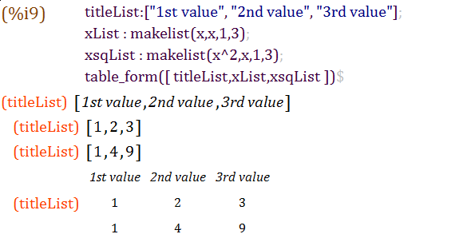
Также, поскольку матрица является списком списков, матрицы могут схожим образом преобразовываться в таблицы.
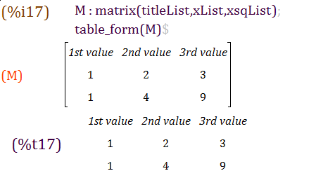
WxMaxima предоставляет несколько функций, которые собирают информацию о текущей системе для формирования отчёта об ошибках:
wxbuild_info() собирает информацию о версии запущенной
программы wxMaxima.wxbug_report() определяет, как и куда отправлять отчёты
об ошибках.Команда Maxima box() вызывает вывод аргументов
wxMaxima с выделением красным цветом, если второй аргумент
команды представляет собой текст highlight.
set_display() позволяет указать, как wxMaxima следует
визуализировать вывод.
set_display('xml) — значение по умолчанию. Здесь Maxima
обращается к wxMaxima с помощью (машиночитаемого) XML-диалекта (доступен
для просмотра на боковой панели «Отслеживание необработанных
XML-данных») и выводит получившиеся формулы в удобном для восприятия
пользователем виде; например, матрицы, знаки квадратного корня, дроби и
так далее.
set_display('ascii) заставляет wxMaxima выводить формулы
как в командной строке Maxima, то есть в виде символов ASCII.
set_display('none) — «однострочные» выходные данные
ASCII — эта команда делает то же самое, что и команда
display2d:false; командной строки Maxima.
Меню справки wxMaxima предоставляет доступ к руководству, подсказкам
и некоторым примерам рабочих листов Maxima и wxMaxima, а также к
демонстрационным примерам в командной строке Maxima (команда
demo()).
Обратите внимание на вывод демонстрационных примеров:
~~~ При появлении приглашения в виде ’_’ введите ’;’ и нажмите
Это работает в командной строке Maxima, но в wxMaxima для продолжения демонстрации необходимо использовать сочетание клавиш CTRL+ENTER
(Сочетание клавиш можно настроить в меню «Настройка -> Лист -> Комбинации клавиш для отправки команд в Maxima».)
Maxima (программа, которая фактически выполняет математические расчёты) и wxMaxima (предоставляет удобный интерфейс пользователя) — отдельные программы, которые обмениваются данными по локальной сети. Поэтому наиболее вероятной причиной проблемы могут быть сбои в работе соединения. Например, межсетевой экран может быть настроен таким образом, что не только предотвращает несанкционированные соединения, поступающие из сети Интернет (а возможно, и некоторые соединения в обратном направлении), но также блокирует взаимодействие между процессами на одном и том же компьютере. Поскольку Maxima работает на процессоре Lisp, блокируемые процессы не обязательно будут носить имя «maxima». Сетевые соединения обычно открывают программы sbcl, gcl, ccl, lisp.exe или подобные им.
На компьютерах с Unix другой возможной причиной может быть неправильная конфигурация закольцованной сети, обеспечивающей сетевое соединение между двумя программами на одном компьютере.
Большинство современных форматов на основе XML представляют собой
обычные zip-файлы. WxMaxima не использует функцию сжатия,
поэтому содержимое файлов .wxmx можно просматривать в
текстовом редакторе.
Если zip-сигнатура в конце файла осталась нетронутой после
переименования повреждённого файла .wxmx в
.zip, то большинство операционных систем смогут обеспечить
извлечение любой части находящихся в нём данных. Это может быть сделано
при необходимости восстановления исходных файлов изображений из
текстового документа. И даже повреждение zip-сигнатуры не означает, что
всё потеряно: если во время сохранения wxMaxima удалось
определить, что что-то пошло не так, появится файл .wxmx~,
содержимое которого может оказаться полезным.
И даже если этого файла нет: формат файла .wxmx
представляет собой контейнер, XML-содержимое в котором хранится без
сжатия. Можно переименовать файл .wxmx в файл
.txt и с помощью текстового редактора восстановить
XML-содержимое файла (оно начинается со строки
<?xml version="1.0" encoding="UTF-8"?> и завершается
строкой </wxMaximaDocument>, а перед этим текстом и
после него в текстовом редакторе располагается нечитаемый двоичный
код).
Если извлечь это содержимое (например, скопировать и вставить этот
текст в новый файл) и сохранить полученный текстовый файл с расширением
.xml, то wxMaxima сможет восстановить текст из
этого документа.
Обычно wxMaxima начинает вёрстку только после полной
передачи двухмерной формулы. Это сделано, чтобы не тратить время на
выполнение нескольких попыток вёрстки частично завершённого уравнения.
Тем не менее, существует команда disp, которая обеспечивает
незамедлительный вывод отладочной информации без ожидания завершения
выполнения текущей команды Maxima:
for i:1 thru 10 do (
disp(i),
/* (sleep n) — функция Lisp, которую можно вызывать */
/* путём предварения символом "?". Она откладывает */
/* выполнение программы (здесь: на 3 секунды) */
?sleep(3)
)$Альтернативный вариант — воспользоваться командой
wxstatusbar() (её описание приводилось выше).
сообщением об ошибке
Это означает, что wxMaxima не удалось прочитать файл, который должен был быть создан Gnuplot по инструкции от Maxima.
Возможные причины ошибки:
implicit_plot, но этот пакет не был загружен с помощью
команды load() Maxima перед попыткой построить
график..gnuplot именем, который расположен в
каталоге, указанном переменной maxima_userdir
Maxima, содержит инструкции от Maxima для
Gnuplot. Чаще всего содержимое этого файла помогает при
отладке.wxplot_pngcairo
в значение «true» в Maxima..png.По умолчанию значение переменной ползунка подставляется в выражение
только тогда, когда эта переменная непосредственно видима в выражении.
Проблему решает использование команды subst, которая
подставляет переменную ползунка в уравнение для формирования графика. В
конце раздела Встраивание анимаций в
электронную таблицу есть соответствующий пример.
восстановлении
Операции с полями и действия по изменению их содержимого имеют свои отдельные функции отмены. Поэтому возникновение такой ситуации крайне маловероятно. Если же это случилось, то имеется несколько способов восстановления данных:
maxima playback();
завершился.»
Одна из возможных причин — Maxima не удалось найти в расположении, которое задано на вкладке «Maxima» диалогового окна параметров конфигурации wxMaxima, и поэтому программа не может запуститься в принципе. Проблема решается указанием пути к рабочему исполняемому файлу Maxima.
Теоретически возможно, что wxMaxima не распознаёт, что Maxima уже завершила вычисление, и поэтому не получает уведомление о том, что пора отправлять новые данные для Maxima. Если дело в этом, то “Trigger evaluation” может помочь повторно синхронизировать эти две программы.
Компилятор Lisp SBCL по умолчанию поставляется с ограничением памяти,
которое позволяет ему работать даже на очень слабых компьютерах. В
процессе компиляции такого большого программного пакета, как Lapack, или
при работе с огромными списками уравнений этот лимит может оказаться
слишком низким. Для увеличения лимита SBCL можно запустить с параметром
командной строки --dynamic-space-size, который указывает
SBCL сколько мегабайт нужно зарезервировать. SBCL для 32-разрядной
версии Windows может зарезервировать до 999 мегабайт. 64-разрядная
версия SBCL для Windows позволяет зарезервировать более 1280 мегабайт,
необходимых для компилирования Lapack.
Один из способов указать параметры командной строки для Maxima (а значит, и для SBCL) — использовать поле «Дополнительные параметры команды Maxima» в диалоговом окне настройки параметров конфигурации wxMaxima.
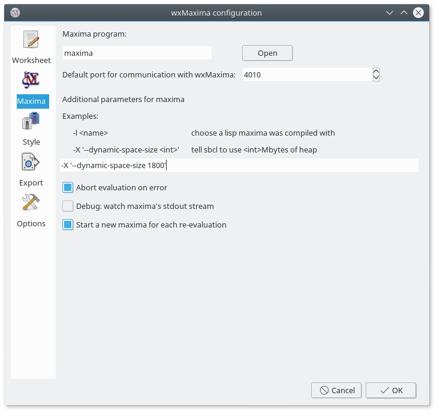
Установка пакета ibus-gtk должна решить этот вопрос.
Более подробную информацию смотрите по адресу (https://bugs.launchpad.net/ubuntu/+source/wxwidgets3.0/+bug/1421558).
умляуты
Если используемая версия Maxima основана на SBCL, то в
.sbclrc необходимо добавить следующие строки:
commonlisp (setf sb-impl::*default-external-format* :utf-8)
Папка, в которой размещается этот файл, зависит от конкретной системы и установки. Но любая версия Maxima на основе SBCL, в которой в текущем сеансе уже производилось вычисление поля, всегда укажет его местонахождение после получения следующей команды:
:lisp (sb-impl::userinit-pathname)
Возможны проблемы с работой протокола графического сервера Wayland и wxWidgets. Это может затронуть wxMaxima (например, будет невозможно перемещать боковые панели).
Можно либо отключить Wayland и использовать вместо этой подсистемы
X11 (глобально), либо просто указать, что wxMaxima должна использовать X
Window System, установкой параметра: GDK_BACKEND=x11
Например, запустить wxMaxima с параметром:
GDK_BACKEND=x11 wxmaxima
Либо компиляция wxWidgets была выполнена без поддержки webview2 от Microsoft, либо компонент webview2 от Microsoft не был установлен.
Браузер HTML может быть реализован в виде версии пакета snap, flatpack или appimage. Все они обычно не имеют доступа к файлам, установленным локально в системе. Другая причина может заключаться в том, что Maxima или wxMaxima установлена в виде версии пакета snap, flatpack или ещё чего-то, что не предоставляет доступа к содержимому операционной системы. Третьей причиной может быть то, что HTML-руководство maxima не установлено локально, а получить доступ к онлайн-руководству не получается.
и встроенных в документ графиков?
В рабочий лист встраиваются .png-файлы. WxMaxima позволяет пользователю указать, где они должны генерироваться:
wxdraw2d(
file_name="test", /* автоматически добавляется расширение .png */
explicit(sin(x),x,1,10)
);Если необходимо использовать другой формат, то проще сначала сгенерировать изображения, а затем снова импортировать их в рабочий лист:
load("draw");
pngdraw(name,[contents]):=
(
draw(
append(
[
terminal=pngcairo,
dimensions=wxplot_size,
file_name=name
],
contents
)
),
show_image(printf(false,"~a.png",name))
);
pngdraw2d(name,[contents]):=
pngdraw(name,gr2d(contents));
pngdraw2d("Test",
explicit(sin(x),x,1,10)
);С помощью переменной wxplot_size:
wxdraw2d(
explicit(sin(x),x,1,10)
),wxplot_size=[1000,1000];сообщения об ошибках, например:
1 HIToolbox 0x00007ff80cd91726 _ZN15MenuBarInstance22EnsureAutoShowObserverEv + 102 2 HIToolbox 0x00007ff80cd912b8 _ZN15MenuBarInstance14EnableAutoShowEv + 52 3 HIToolbox 0x00007ff80cd35908 SetMenuBarObscured + 408 ...
Эта ошибка может быть связана с операционной системой. Отключение скрытия строки меню (Системные настройки => Рабочий стол и Dock => Строка меню) может решить проблему. Более подробная информация доступна в ошибке wxMaxima #1746.
Сообщения журнала могут быть полезны при отладке. WxMaxima поддерживает журналирование широкого спектра событий. Большинство записей журнала пригодятся разработчикам, особенно при появлении проблем или внутренних ошибок. Если запущена сборка выпуска, журнал не отображается по умолчанию. Если же запущена сборка разработки, журнал по умолчанию отображается как второе окно. Это окно можно включать и отключать с помощью пункта меню «Вид -> Переключить окно журнала».
Сообщения не «теряются»; если окно журнала не показано, то при последующем включении его отображения будут доступны для просмотра также и прошлые сообщения журнала (если они не были очищены пользователем).
Такие сообщения могут быть полезны при создании отчётов об ошибках (или при самостоятельном поиске ошибок).
Сообщения журнала можно (дополнительно) выводить в STDERR с помощью параметра командной строки «–logtostderr». В Windows будет открыта отдельная текстовая консоль, так как у приложения Windows с графическим интерфейсом пользователя не подключён стандартный ввод/вывод.
Да. Можно использовать пакет LaTeX «geometry», который позволяет указать размеры границ.
Можно добавить следующую строку к преамбуле LaTeX (например, путём использования соответствующего поля в диалоге настройки («Экспорт -> Дополнительные строки для преамбулы TeX»), чтобы установить границы размером 1 см):
latex \usepackage[left=1cm,right=1cm,top=1cm,bottom=1cm]{geometry}
Если версия wxWidgets достаточно свежая, то wxMaxima автоматически использует тёмную тему, когда вся остальная операционная система настроена на работу в ней. Сам по себе рабочий лист по умолчанию оснащён светлым фоном, но можно установить тёмный. Кроме того, имеется пункт меню «Вид/Инвертировать яркость рабочего листа», позволяющий быстро преобразовывать рабочий лист из тёмного в светлый и обратно.
WxMaxima делегирует ряд больших задач, таких как обработка >1000-страничного руководства Maxima, фоновым задачам, что обычно происходит абсолютно незаметно. Когда требуется получить результат выполнения такой задачи, wxMaxima может понадобиться подождать пару секунд перед продолжением работы.
’xx_YY’ can not be set»
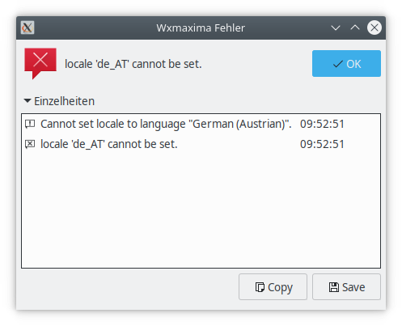
(Та же ошибка может возникать и с другими приложениями). После нажатия кнопки «ОК» никаких проблем с переводом не обнаруживается. WxMaxima использует не только свои собственные переводы, но и переводы платформы wxWidgets.
Указанные локали могут отсутствовать в системе. В системах
Ubuntu/Debian их можно сгенерировать с помощью команды
dpkg-reconfigure locales
и так далее?
Эти символы доступны на боковой панели «Юникод» (выполните поиск по ’double-struck capital’). Но такие символы должен поддерживать и выбранный шрифт. Выберите другой шрифт, если символы отображаются неправильно.
управлением wxMaxima или командной строки Maxima?
Если используется wxMaxima, то переменная Maxima
maxima_frontend установлена в значение
wxmaxima. Переменная Maxima
maxima_frontend_version в этом случае содержит версию
wxMaxima.
Если графический интерфейс не используется (работа выполняется в
командной строке Maxima), то эти переменные имеют значение
false.
Обычно программы с графическим интерфейсом пользователя можно запускать простым щелчком по значку на рабочем столе или пункту меню рабочего стола. Тем не менее, wxMaxima — при запуске из командной строки — позволяет использовать некоторые аргументы командной строки.
-v или --version: вывести информацию о
версии.-h или --help: вывести краткую справочную
информацию.-o или --open=<str>: открыть файл,
заданный в виде аргумента к этому ключу командной строки.-e или --eval: выполнить вычисление файла
после его открытия.-b или --batch: если файл открывается из
командной строки, то все поля в этом файле вычисляются, после чего
выполняется его сохранение. Например, это полезно, когда сеанс,
описанный в файле, заставляет Maxima генерировать файлы вывода.
Пакетная обработка будет остановлена, если wxMaxima
обнаруживает, что Maxima вывела сообщение об ошибке, либо
приостановлена, если у Maxima возникает вопрос: математические
вычисления по своей природе обладают некоторой интерактивностью, поэтому
при пакетной обработке её полное отсутствие не всегда возможно.--logtostderr: журналировать все «отладочные сообщения»
из боковой панели также и в stderr.--pipe: перенаправлять сообщения из Maxima в
stdout.--exit-on-error: закрывать программу при любой ошибке
Maxima.-f or --ini=<str>: использовать файл
init, переданный в качестве аргумента данному ключу командной
строки.-u, --use-version=<str>:
использовать версию Maxima <str>.-l, --lisp=<str>: использовать
Maxima, скомпилированную компилятором Lisp<str>.-X, --extra-args=<str>: позволяет
указать дополнительные аргументы Maxima.-m or --maxima=<str>: позволяет
указать расположение двоичного файла Maxima.--enableipc: позволяет Maxima использовать
межпроцессное взаимодействие для управления wxMaxima. Используйте этот
параметр с осторожностью.--wxmathml-lisp=<str>: расположение wxMathML.lisp
(если необходимо использовать не встроенный файл; предназначено, главным
образом, для разработчиков).Вместо минуса в некоторых операционных системах перед ключами командной строки может использоваться тире.
wxMaxima написана большей частью на языке программирования C++ с использованием платформы wxWidgets, в качестве системы сборки используется CMake, небольшая часть написана на Lisp. Можно принять участие в разработке wxMaxima. Для этого необходимо присоединиться к проекту wxMaxima на https://github.com/wxMaxima-developers/wxmaxima при наличии навыков программирования на этих языках и желании внести вклад в разработку проекта wxMaxima с открытым исходным кодом.
Но требуются не только программисты! Внести вклад в разработку wxMaxima можно также путём улучшения документации, поиска ошибок и отправки соответствующих отчётов (а также, возможно, исправлений), предложения новых функциональных возможностей, помощи с переводом интерфейса или документации wxMaxima на другие языки (для получения информации о порядке перевода интерфейса и документации wxMaxima изучите файл README.md в подкаталоге локализации).
Также можно отвечать на вопросы других пользователей на дискуссионном форуме.
Исходный код wxMaxima документирован с помощью Doxygen здесь.
Программа практически полностью автономна, поэтому — за исключением
системных библиотек (и библиотеки wxWidgets) — для её работы не
требуется внешних зависимостей (например, графических файлов или части
на языке Lisp (файл wxmathML.lisp); эти файлы включены в
исполняемый файл).
Если вы разработчик, то вы можете поработать с изменённым файлом
wxmathML.lisp без выполнения полной перекомпиляции. Указать
другой файл Lisp (нестандартный файл) можно с помощью параметра
командной строки --wxmathml-lisp=<str>.